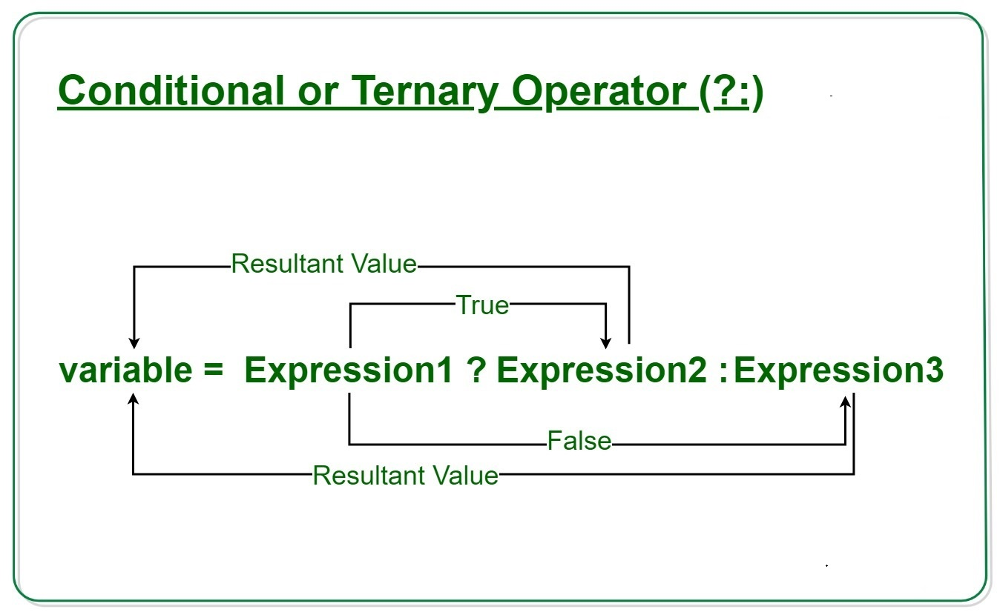
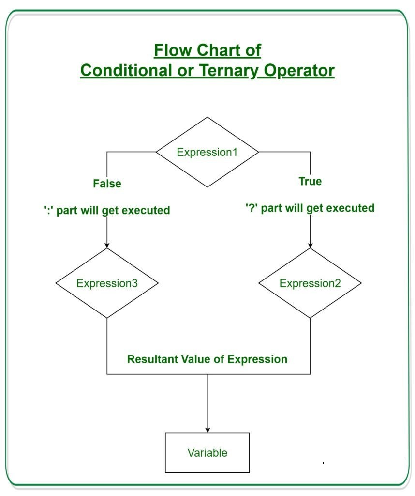

Conditional operator ‘?’
Sometimes, we need to assign a variable depending on a condition. For instance: let accessAllowed; let age = prompt('How old are you?', ''); if (age > 18) { accessAllowed = true; } else { accessAllowed = false; } alert(accessAllowed); The so-called “conditional” or “question mark” operator lets us do that in a shorter and simpler way. The operator is represented by a question mark ?. Sometimes it’s called “ternary”, because the operator has three operands. It is actually the one and only operator in JavaScript which has that many. The syntax is: let result = condition ? value1 : value2; The condition is evaluated: if it’s truthy then value1 is returned, otherwise – value2.  For example: let accessAllowed = (age > 18) ? true : false; Technically, we can omit the parentheses around age > 18. The question mark operator has a low precedence, so it executes after the comparison >. This example will do the same thing as the previous one: // the comparison operator "age > 18" executes first anyway // (no need to wrap it into parentheses) let accessAllowed = age > 18 ? true : false; But parentheses make the code more readable, so we recommend using them. Please note: In the example above, you can avoid using the question mark operator because the comparison itself returns true/false: // the same let accessAllowed = age > 18; Multiple ‘?’ A sequence of question mark operators ? can return a value that depends on more than one condition. For instance: let age = prompt('age?', 18); let message = (age < 3) ? 'Hi, baby!' : (age < 18) ? 'Hello!' : (age < 100) ? 'Greetings!' : 'What an unusual age!'; alert( message );  It may be difficult at first to grasp what’s going on. But after a closer look, we can see that it’s just an ordinary sequence of tests: The first question mark checks whether age < 3. If true – it returns 'Hi, baby!'. Otherwise, it continues to the expression after the colon ‘":"’, checking age < 18. If that’s true – it returns 'Hello!'. Otherwise, it continues to the expression after the next colon ‘":"’, checking age < 100. If that’s true – it returns 'Greetings!'. Otherwise, it continues to the expression after the last colon ‘":"’, returning 'What an unusual age!'. Here’s how this looks using if..else: if (age < 3) { message = 'Hi, baby!'; } else if (age < 18) { message = 'Hello!'; } else if (age < 100) { message = 'Greetings!'; } else { message = 'What an unusual age!'; }Non-traditional use of ‘?’
Sometimes the question mark ? is used as a replacement for if: let company = prompt('Which company created JavaScript?', ''); (company == 'Netscape') ? alert('Right!') : alert('Wrong.'); Depending on the condition company == 'Netscape', either the first or the second expression after the ? gets executed and shows an alert. We don’t assign a result to a variable here. Instead, we execute different code depending on the condition.It’s not recommended to use the question mark operator in this way.
The notation is shorter than the equivalent if statement, which appeals to some programmers. But it is less readable. Here is the same code using if for comparison: let company = prompt('Which company created JavaScript?', ''); if (company == 'Netscape') { alert('Right!'); } else { alert('Wrong.'); } Our eyes scan the code vertically. Code blocks which span several lines are easier to understand than a long, horizontal instruction set. The purpose of the question mark operator ? is to return one value or another depending on its condition. Please use it for exactly that. Use if when you need to execute different branches of code.Nested ternary operators
You can also nest one ternary operator as an expression inside another ternary operator. For example, // program to check if number is positive, negative or zero let a = 3; let result = (a >= 0) ? (a == 0 ? "zero" : "positive") : "negative"; console.log(`The number is ${result}.`); Output: The number is positive. Note: You should try to avoid nested ternary operators whenever possible as they make your code hard to read.Predict the output of below programs
let x; x = 5 > 8 ? 10 : 1 != 2 < 5 ? 20 : 30; console.log('X is: ',x) let x; x = 5 < 8 ? 1 != 2 < 5 == 0 ? 10 : 20 : 30; console.log('X is: ',x) let x; x = 2 > 5 != 1 ? 5 < 8 && 8 > 2 ? !5 ? 10 : 20 : 30 : 40; console.log('X is: ',x) let x; x = 2 > 5 ? 1 != 2 > 5 ? 10 : 20 : 5 < 8 ? 2 != 2 > 5 ? !5 ? 30 : !1 != 1 ? 40 : 50 : 60 : 70; console.log('X is: ',x)n this Program we have used the conditional operator for comparing biggest of three numbers.
let a=12, b=33, c=44, big, small ; small=(a<b? (a<c?a:c) : (b<c?b:c) console.log('Small is: ',small); big = a > b ? (a > c ? a : c) : (b > c ? b : c) ; console.log('Big is: ',big)